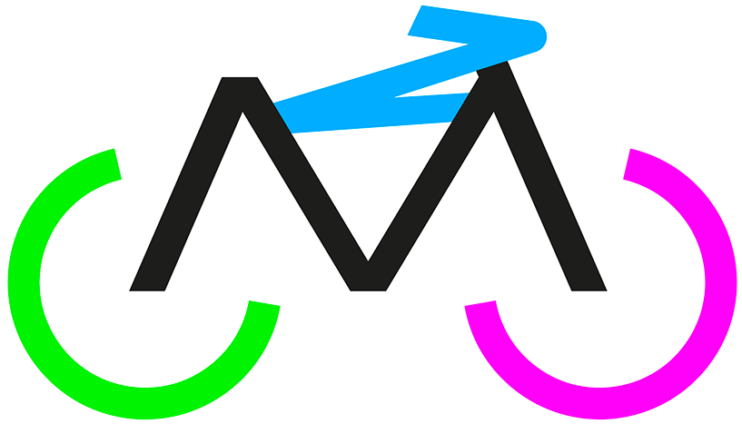
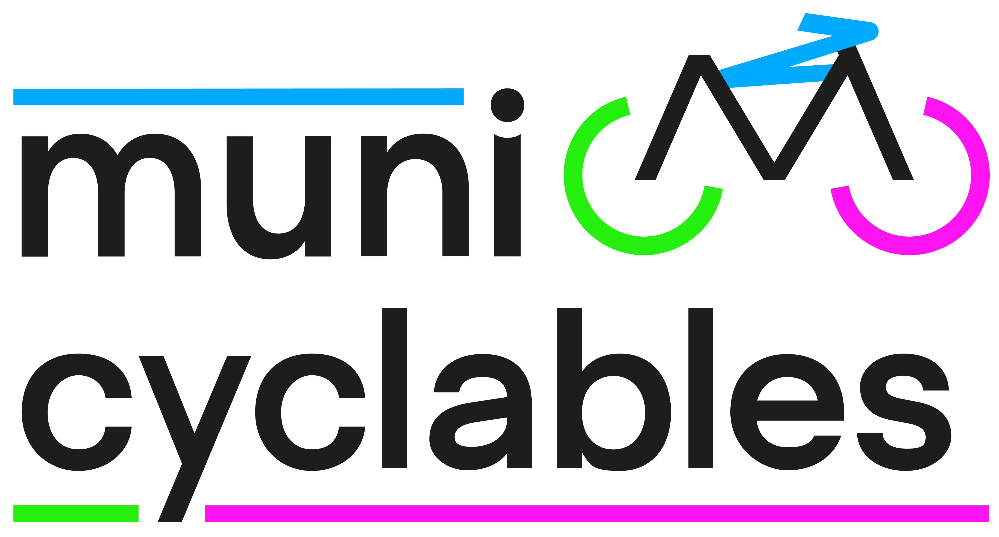

Municyclables
Projet de groupe
Le brief : créer un projet mêlant les élections municipales 2026 et le vélo.
Notre proposition : Municyclables, un événement proposé par la ville de Strasbourg...
Mon rôle : Finalisation du logo, motion-design, pancartes, application GPS.

